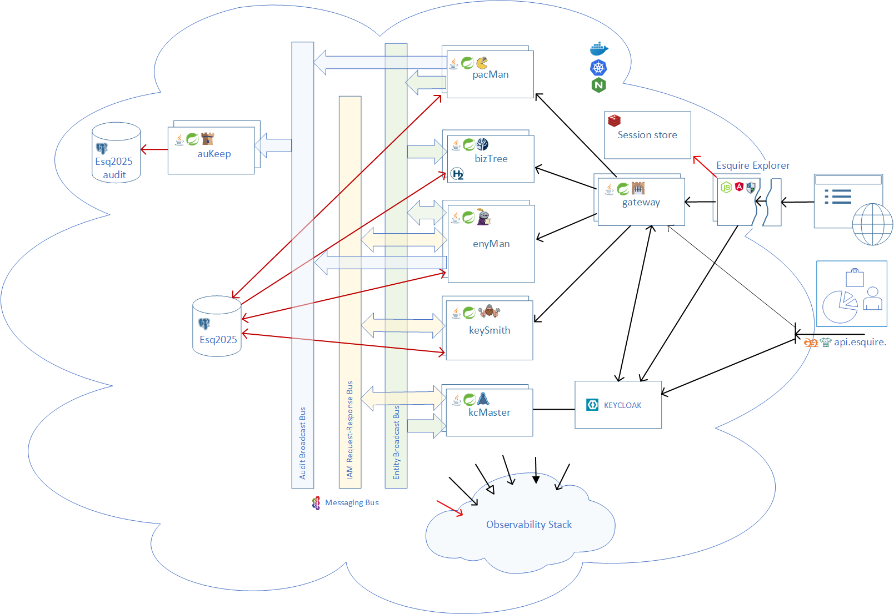
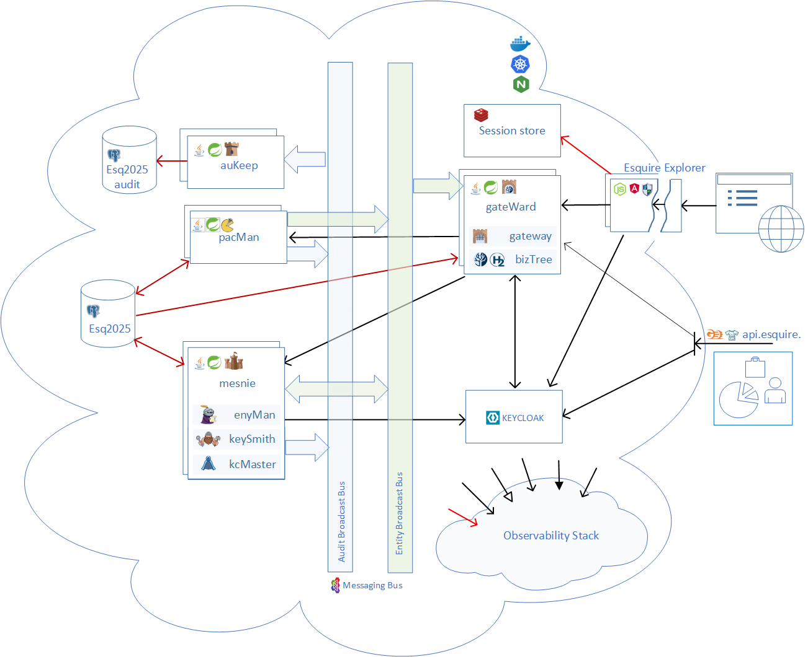
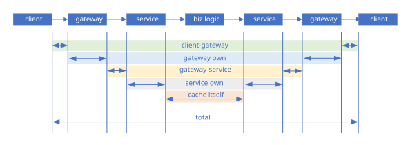

Decomposition is not microservices
Microservices was named in 2014: "an approach to developing a single application as a suite of small services, each running in its own process" [1]. The idea: decompose a monolith so it can be maintained, scaled, and kept running in parts.
This definition ties two decisions together. And since then, most architectural debates have concentrated on the "weld" — rather than on either decision.
The first decision is decomposition. Where the seams in your system are. What talks to what, through which contract, and what each part is allowed to know about the others. It is a design question; it is answered during the initial system development; and it is expensive to change afterward.
The second decision is packaging. Which parts share a program, and how many programs run, on how many machines, across how many network hops, through how many deployment pipelines? Those are operational questions; they are answered at deployment; and they should be cheap to change.
The pattern forces a single decision: one service, one process. Production has its own reasons to decide — the budget, the nodes, the latency it can accept. Nothing says where one decision ends and the other begins.
Moving away from the strict pattern is not a fringe position. Google surveyed its own infrastructure teams and found that the approach "often backfires, introducing challenges that counteract the benefits the architecture tries to achieve"; its answer is to write applications as logical monoliths and "offload the decisions of how to distribute and run applications to an automated runtime" [2]. Uber, at around 2,200 microservices, reorganized around "collections of related microservices... We call these domains" [3].
Decompose by design, then aggregate for efficiency. A claim like this one requires proof.
The shape to start from
The pattern splits a system "around business capability" rather than by technical layer [1]. Each service owns an area of the business, talks to the others over the network, and is deployed as its own program.
The pattern treats business services, and only those. Isolating them leaves other kinds behind: gateways that convert protocols, apply the security stack, and route requests; adapters that speak external protocols — a broker, a database, or a vendor API. The host that serves a user interface — a web application, a web server, a Node process — counts the same way, as a service. There are services and services — the pattern has no name for the second kind. Both need the same treatment: design, code, build, deploy, monitor, and maintain.
Esquire, the framework this experiment runs on, was split into eight programs: three business services and five on staff. The first three are an entity service, a credentials-and-roles service, and an accounting service. The staff: an asynchronous IAM adapter (keeping the user directory in sync), an audit writer, a gateway, a tree cache, and the host that serves the administrative interface. The seams between services were designed first: typed events on a messaging bus, interfaces rather than reach-in calls, no shared tables.

The drawing shows two database instances. That is a deployment choice, not a design one. The pattern says each service should "manage its own database" [1]. That is usually read as one database server per service. Strictly, it says: own the data. One service owns its tables, and nobody else touches them. Where those tables live — one database, a schema each, separate servers — is settled at deployment, by your DBA.
Separate a service's data physically, and you give up the foreign key, the join, one transaction across two tables. "Distributed transactions are notoriously difficult to implement" [1]. The work does not disappear — it should move into your code, where you reinvent what the database already has.
With redundancy the number of processes doubles: sixteen pods on Kubernetes — the shape the experiment ran. For a demo that is four nodes for the services, and at least one more for infrastructure (the database, broker, identity, and session store): five nodes in total.
What was merged, and what was not
Of the eight, two groups merge, and three programs stay as they are. That makes five.
- The gateway and the tree cache become one. One task: answer a tree read as fast as possible. These two are together: the gateway routes the request, and the cache answers it. Merging them removes the wire and the hop between them. The trade-off is that the gateway stops being a thin front door. A real one is never quite stateless anyway — it caches tokens and sessions — but with the tree inside, it warms up before it can serve.
- The entity service, the credentials service, and the IAM adapter become one. One task again: two business services working with entities, both wired to the same IAM adapter behind them. Merged, the adapter no longer needs its own process, and an in-process queue replaces the two wires.
- The accounting service stays its own program. It carries the business domain. Any other domain could stand in its place: the same slot, a different business. It has its own development cycle, release pipeline, and workload.
- The audit writer stays its own program. Its task is the durable record, it is off the request path, and it needs its own redundancy. Every service writes to it, so merging it means merging it into all of them: the end of the decomposition idea. It stays alone.
- The interface host stays its own program. Its task is serving the browser, and it runs on a different runtime: Node, where everything else is Java. Nothing crosses that line.
Aggregation is not "merge everything that compiles". Merge the services that share a job, and leave alone the ones where merging would cost more than it saves. Nothing prevents two unrelated services from sharing a program; it simply gains nothing, because no wire disappears between them.
The shape it lands on
Five programs: the three business services merged into two, and three left on staff. The entity service and the credentials service in one, with the IAM adapter inside. The accounting service alone. On staff: the gateway with the tree cache, the audit writer, and the interface host. With redundancy, that is ten pods on three nodes, plus the one for infrastructure. Four nodes, against five for the unfolded classic shape.
| classic | compact | |
|---|---|---|
| the entity and credentials services, and the IAM adapter | three programs | one program |
| the gateway and the tree cache | two programs | one program |
| the accounting service | its own program | its own program |
| the audit writer | its own program | its own program |
| the interface host | its own program | its own program |
| messaging buses defined | 3 | 2 |

No service was rewritten to get from one column to the other. The compact shape has two wrappers, one per merged group. Each starts the parts it carries and owns the process. That is possible because a service's code ships with two entry points, or starting hooks: 1) for a standalone process, 2) for a wrapper. The wrapped services talk through a defined seam.
Each wrapper was written for one concrete grouping: merge these three, merge those two. The pattern behind them is the same in both: start the service's parts, the seam carries on inside the process, a message handler stays asynchronous. For an aggregation to be recognized as a deployment choice, the wrapper has to be generic: it takes its grouping from configuration, so that a new aggregation costs no coding effort. That is the finding this experiment leaves on the framework's backlog.
Each service keeps its own codebase and its own tables. The change is that they are deployed together instead of alone.
Merging does not change the seam; it changes the transport under it. What goes away is a network hop and a second copy of the application runtime stack: the JVM, the drivers, the connection pools, the framework layers.
What the numbers say
The lab. Every measurement below comes from a cluster built for it: the stack torn down, the volumes dropped, the database re-seeded, the identity realm re-imported, observability off, then five hundred users and five hundred accounts created across five nested offices, then one operation driven on its own. Each shape gets its own measurement, one after another. Everything here is the same except the shape: classic or compact.
The load. Eight callers, not a rate. Each runs on its own thread and works in step: send a request, wait for the answer, then send the next. Eight is enough to keep the stack busy and few enough that it is not yet at its limit. Requests per second is not a setting. It is the capacity of the stack: the maximum bandwidth a fixed pool of user connections can produce.
The plateau. One number is not from a single run. The first load is a warm-up and is ignored. Loads are repeated while the stack is still speeding up, and stop once the increase is too small to matter. The table records the average of all those loads.
| operation | shape | total | req/s | gain |
|---|---|---|---|---|
| read an account | classic | 3 ms | 2,529 | |
| compact | 3 ms | 2,544 | +1% | |
| deposit and withdrawal | classic | 5 ms | 1,472 | |
| compact | 5 ms | 1,503 | +2% | |
| read a user | classic | 5 ms | 1,437 | |
| compact | 5 ms | 1,452 | +1% | |
| update a user | classic | 8 ms | 1,033 | |
| compact | 8 ms | 1,038 | 0% | |
| root tree | classic | 25 ms | 315 | |
| compact | 16 ms | 486 | +54% | |
| user tree | classic | 5 ms | 1,473 | |
| compact | 3 ms | 2,678 | +82% |
Three cases stand out:
Not folded. Accounting is the same program in both shapes. Nothing was merged there, and the difference in results is noise.
Folded, no hop removed. In compact, the entity service is a module, not a program. The gateway still calls it over the network. The results do not differ again — only noise.
Folded, hop removed. On the tree reads, the network call disappears completely. The gain was expected, but not this large. And this needs a closer look: under load, the system can measure the duration of every request step.

Duration in milliseconds. The total is the sum of all five bands. Every band except "cache itself" is a round trip.
| operation | shape | client- gateway |
gateway own |
gateway- service |
service own |
cache itself |
total |
|---|---|---|---|---|---|---|---|
| root tree | classic | 4.9 | 0.6 | 4.8 | 14.5 | 0.0 | 24.8 |
| compact | 6.1 | 3.5 | 0.2 | 6.2 | 0.0 | 16.0 | |
| user tree | classic | 1.3 | 0.5 | 2.2 | 1.3 | 0.0 | 5.3 |
| compact | 1.5 | 0.6 | 0.2 | 0.6 | 0.0 | 2.9 |
The innermost band, "cache itself", is under fifty microseconds — too small to be visible at this resolution and not a concern here.
What disappears is not just the wire, as was expected. The seam is not removed but moved into a single process, and everything the framework does around a REST call at both ends — serialize, send, parse, route, respond — goes away.
What the fold cannot touch is the size of the answer. The root tree returns about a thousand nodes, whereas a customer's returns two. Building that answer takes time — the small read is much faster.
In the experiment, aggregation cut the response time for a tree read — one call that returns an entire branch from the cache — by about half. It also allowed a smaller machine budget.
What makes it possible
Merging depends on conditions that fall into two groups: 1) requirements for the runtime environment, 2) requirements the modules being merged must meet.
The environment side comes with any modern stack. The rest is how the modules are built.
What the environment must provide
- A process context is built from configuration; a program can run any declared module.
- A program reads its composition at startup, so regrouping does not require a rebuild.
- The platform decides how many programs run, and how callers find them.
What the modules must satisfy
- Ideally, the merging modules share a runtime stack. Bridging different runtimes is possible — embedded engines, native calls — but the bridge usually costs more than the savings from merging.
- Process-level resources belong to the program and are shared among modules. Modules use only what they need.
- Modules share the same patterns: how they start, how they are configured, how they connect.
- Modules address each other by channel name. The message carrier, such as a broker or a queue within the process, is configured rather than hardcoded.
- Modules are separate and self-sufficient. Each owns its data, and nothing reaches inside another.
That last requirement echoes an argument that has run before. Relational databases spent the 1970s learning to separate data properly — normalization — and a decade later began putting some of it back on purpose — denormalization.
Normal forms arrived in sequence, and Codd set them going: the relational model and first normal form in 1970 [4], second and third in 1971, Boyce-Codd in 1974. Stricter forms followed later, from other hands. Denormalization followed too, and had a name by 1980, when Schkolnick and Sorenson published it as a design technique. Inmon states the main rule plainly: "data should be firstly normalized as the design is being conceptualized and then denormalized in response to the performance requirements" [5].
Where aggregation stops
A fold always takes something away in exchange. If anything below matters, stop:
- A module must scale alone. Then it needs its own program: every replica of a merged program runs all of its modules.
- A module must keep its own release pipeline. Releasing it means redeploying every program that includes it, and sometimes that is not allowed.
- A failure must not spread. When a single module fails, the entire process restarts: all modules go down.
- A program must stay stateless. Merge a cache into it, and it warms up before it can serve. Every replica carries its own state.
Those stops are real, and for some systems they are decisive. But they are deployment trade-offs, and you should make them per environment rather than have them fixed in the architecture. The same code can run folded in one environment and unfolded in another. Nothing is migrated, and no codebase branch exists for "the small version".
Microservices is not a dogma. The claim here is narrower: if your services are part of one system, then how many processes they run in is decided at deployment.
What comes after decoupling
The procedure runs in order:
- Draw the system as a schematic. Each program is a block. Initially, each service is a program. Draw one box for each replica you plan to run. Each channel between blocks is a wire. The messaging bus is a wire that connects several blocks.
- Discard what cannot be merged. Two services on different runtimes cannot share a process. Any strict deployment requirement also stops merging: scaling, release pipeline, failure isolation, statelessness.
- Group by task. Each service performs a specific job in the system: representing a part of the business domain, responding to user requests, working with entities, maintaining a durable record. Services that share a job form one group; others do not, no matter how convenient the fold might be.
- Within a group, merge blocks to remove wires. Two blocks connected by a wire carrying only their own traffic: merge them, and the wire is gone.
- Measure the traffic on the wire. The benefit of merging is to remove connection overhead. Merge only the blocks connected by a high-traffic wire.
- Follow the wires to the third block. When two blocks connect to the same third block, merge all three, and two wires are gone.
The result is a compromise — and it should be: the fewest blocks, with every remaining wire earning its place.
Decompose by design, then aggregate for efficiency.
References
[1] James Lewis and Martin Fowler, Microservices, 25 March 2014 — the article that named the style and defined it by how it is deployed.
[2] Sanjay Ghemawat, Robert Grandl, Srdjan Petrovic, Michael Whittaker, Parveen Patel, Ivan Posva and Amin Vahdat (Google), Towards Modern Development of Cloud Applications, HotOS '23, June 2023 — microservices conflate logical boundaries with physical ones.
[3] Adam Gluck, Introducing Domain-Oriented Microservice Architecture, Uber, 23 July 2020 — grouping services into domains at around 2,200 microservices.
[4] E. F. Codd, A Relational Model of Data for Large Shared Data Banks, Communications of the ACM 13(6), 1970 — the relational model, and first normal form with it.
[5] W. H. Inmon, Information Engineering for the Practitioner: Putting Theory into Practice, Yourdon Press, 1988 (ISBN 978-0134645797) — normalize as the design is conceived, denormalize in response to performance.
The system is Esquire, a framework for backoffice systems — Java and Spring Boot, an Angular front end, Postgres or Oracle, identity synchronized to Keycloak. The measurements above come from its own load harness, and the matrix documents with every cell in them are in the repository: github.com/mir0n-pro. A deployment is running at esquire.mir0n.pro — sign in with mainadmin / q, it is a demonstration tree. The data is reseeded from time to time.